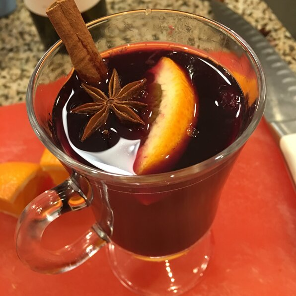

Mulled Wine Recipe

A Delicious Treat For Any Occasion
Ingredients:
- 1 (750 milliliter) bottle red wine (such as Cabernet Sauvignon, Zinfandel, or Merlot)
- 1 Orange, peeled, and sliced
- 2/3 cup honey
- 1/4 cup brandy
- 3 cinnamon sticks
- 8 whole cloves, or more to taste
- 1 teaspoon grated fresh ginger
STEPS:
- Combine red wine, orange slices, honey, brandy, cinnamon sticks, cloves, and ginger in a slow cooker.
- Cook on Low until wine is steaming, 20 to 25 minutes.